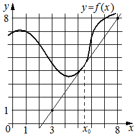

Авторский разбор и аудит предварительны; внешней экспертизы нет.
Технически завершена: True; в основных частотах: True ·
Впишите правильный ответ.
На рисунке изображены график функции и касательная к нему
в точке с абсциссой . Найдите значение производной функции
в точке .

КЭС: 4.1 Производная функции. Производные элементарных функций; 4.2 Применение производной к исследованию функций на монотонность и экстремумы. Нахождение наибольшего и наименьшего значения функции на отрезке
1,4
| ID / вход | Действие | Результат | Локальные KC |
|---|---|---|---|
| s1 · condition | Определить угловой коэффициент касательной по двум её точкам на координатной сетке. | Касательная проходит через точки (3; 1) и (8; 8), поэтому её угловой коэффициент k = (8 − 1)/(8 − 3) = 7/5 = 1,4. | kc1 |
| s2 · condition, s1 | Применить геометрический смысл производной в точке касания. | Значение производной f′(x₀) равно угловому коэффициенту касательной: f′(x₀) = 1,4. | kc2 |
[
{
"id": "m1",
"name": "Вычисление производной через наклон касательной",
"step_ids": [
"s1",
"s2"
]
}
]Для невертикальной прямой на координатной сетке считать координаты двух различимых точек и вычислить отношение приращения ординаты к приращению абсциссы с учётом масштаба осей.
{
"local_kc_id": "kc1",
"status": "new_candidate",
"catalog_kc_id": null,
"evidence": [
{
"ref": "step:s1:result",
"quote": "Касательная проходит через точки (3; 1) и (8; 8), поэтому её угловой коэффициент k = (8 − 1)/(8 − 3) = 7/5 = 1,4."
},
{
"ref": "image:assets/99a44b19d6156491de03f4dc.png",
"region_description": "Возрастающая прямая проходит через отмеченные узлы сетки (3; 1) и (8; 8); масштаб осей указан единичными отметками."
}
],
"context_refs": [],
"alternatives_checked": [
{
"catalog_kc_id": "graph_coordinates",
"reason": "Чтение координат не включает вычисление отношения приращений."
},
{
"catalog_kc_id": "literal_f253b50b98a1",
"reason": "Определение требует восстановления обоих коэффициентов y=kx+b; здесь находится только наклон, свободный член не восстанавливается."
},
{
"catalog_kc_id": "direct_proportion",
"reason": "Прямая не проходит через начало координат; используется отношение приращений, а не y/x."
}
],
"rationale": "На сетке установлены две точки невертикальной прямой, вычислено отношение приращений. В полном каталоге нет определения именно этого действия: чтение точек уже, восстановление общей линейной функции шире. Нет необходимости дробить это графическое действие и арифметику ради атомизации.",
"proposal": {
"name": "Вычислять угловой коэффициент прямой по координатной сетке",
"definition": "По двум точно различимым точкам невертикальной прямой на координатной сетке с установленным масштабом вычислить k=(y2−y1)/(x2−x1), сохраняя знак приращений. Восстановление свободного члена не требуется."
},
"blocking": false,
"issue_ids": []
}По угловому коэффициенту касательной к графику функции в заданной точке определить значение производной функции в этой точке; применяется при существовании производной и невертикальной касательной.
{
"local_kc_id": "kc2",
"status": "new_candidate",
"catalog_kc_id": null,
"evidence": [
{
"ref": "step:s2:result",
"quote": "Значение производной f′(x₀) равно угловому коэффициенту касательной: f′(x₀) = 1,4."
}
],
"context_refs": [
"condition",
"step:s1:result"
],
"alternatives_checked": [
{
"catalog_kc_id": "literal_9aee0783618d",
"reason": "Требует чтения знака по графику самой производной; здесь дан график функции и касательная, определяется численное значение производной."
},
{
"catalog_kc_id": "literal_3a3e1295118b",
"reason": "Дифференцирование многочлена по формуле не выполняется; формула функции не задана."
},
{
"catalog_kc_id": "derivative_monotonicity",
"reason": "Переход от знака производной к монотонности не используется; требуется геометрический смысл значения производной."
}
],
"rationale": "Касательная дана в условии, её конечный угловой коэффициент получен на s1. На s2 выполнен переход от него к значению производной в точке касания. В полном каталоге определения этого действия нет.",
"proposal": {
"name": "Определять производную по наклону касательной",
"definition": "При существовании производной и невертикальной касательной к графику функции в заданной точке использовать равенство производной угловому коэффициенту этой касательной. Вычисление коэффициента по графику отдельно."
},
"blocking": false,
"issue_ids": []
}[]
[]
{
"technical_errors": [],
"author_path": "raw\\author\\DDC830.json",
"auditor_path": "raw\\auditor\\DDC830.json"
}